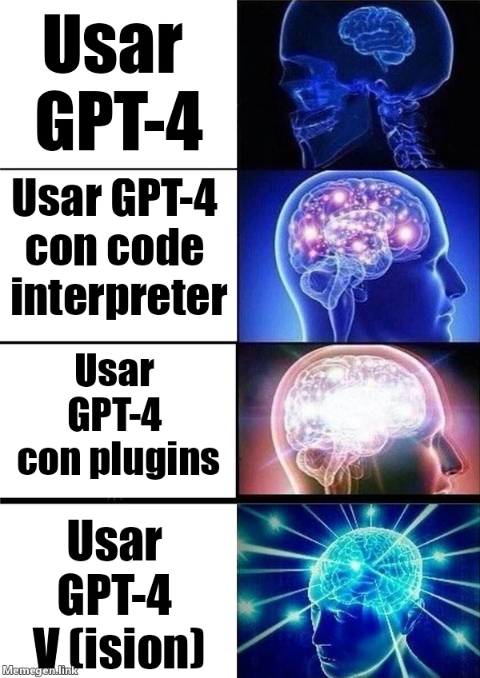

estrategIA #3 ·
Cuando la IA aprende a ver
El contexto
La escalera de cerebros cada vez más luminosos recorre las funciones de GPT-4 hasta su capacidad de interpretar imágenes. El número exploraba aplicaciones políticas de esa visión; la exageración visual expresa el entusiasmo de aquel momento por las nuevas herramientas.
Publicado en: estrategIA #3 - Cómo aplicar la capacidad de la IA de "ver" al ámbito político
Leer el texto de la imagen
Usar GPT-4 Usar GPT-4 con code interpreter Usar GPT-4 con plugins Usar GPT-4 V(ision)
Marca de la herramienta visible en el original: Memegen.link.